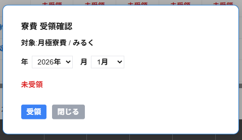

寮費 受領確認の画面には以下の項目が表示されます。
・対象
データ管理で登録した待機料・寮費・雑費名と対象のキャスト名が表示されます。
・年
受領状況を更新したい対象の年を選択します。
・月
受領状況を更新したい対象の月を選択します。
・受領状況
現在の受領状況が表示されます。
※月極寮費を受領済みの場合は支払済、受領前の場合は未受領と表示されます。
・受領
入力した年月日の寮費を受領として更新することができます。
※支払済の場合は表示されません。
・受領取り消し
入力した年月日の寮費を受領を取り消しすることができます。
※未受領の場合は表示されません。
